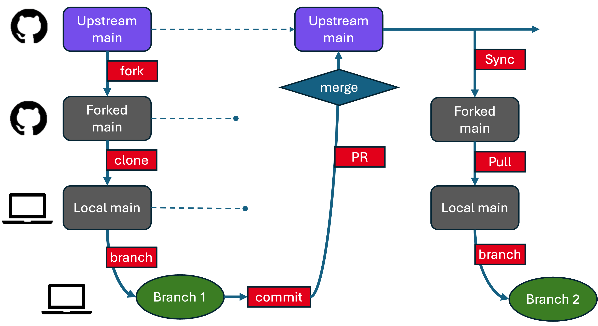

Collaborating on Someone Else’s Repository
📝 This guide is part of the
template-projectdocumentation and is designed for contributors who are working on a fork of someone else’s repository.
This guide walks you through the typical GitHub workflow to:
Fork a repository
Clone it to your computer
Create a branch
Make and commit changes
Push and open a pull request

A typical GitHub fork and pull request workflow with syncing back to the fork. You work in a branch; the important copy of the code (and its history) is in the Upstream Main. The forked main and local main are just a means of transferring information.
It assumes you’re working on GitHub and contributing to a project you don’t own.
See Github Intro for some (brief) additional information about this terminology.
1. Fork the Repository
Create your own copy of a repository on GitHub.
GitHub.com
Navigate to the repository you’re interested in copying (e.g.,
https://github.com/eleanorfrajka/template-project).Click the Fork button (top right).
Select your account as the destination.
This creates https://github.com/YOUR_USERNAME/template-project — your personal fork, in your account on Github.com.
2. Clone the Repository
Download your forked repo to your local machine.
Terminal
git clone https://github.com/yourusername/template-project.git
cd template-project
GitHub Desktop
Open GitHub Desktop.
File → Clone Repository.
Choose your fork from the list.
💡 Avoid syncing to cloud storage folders — Git and cloud services don’t play well together.
Now you have a “local” copy of the repository on your machine. At the point when you clone it, it’s an exact replica of your forked repository on Github.com.
3. Add the Original Repo as “Upstream”
This allows you to fetch changes from the original repository later.
Terminal
git remote add upstream https://github.com/eleanorfrajka/template-project.git
git remote -v # Check remotes
VSCode
Open Terminal in VSCode and run the same commands.
GitHub Desktop
Not supported directly, but you can add upstream via command line.
4. Create a Branch for Your Changes
Best practice: You should never edit your main branch directly. Always work in a new branch. So, start by making a branch.
Terminal
git checkout main
git pull upstream main # Make sure your fork is up to date
git checkout -b yourname-patch-1 # Create and switch to a new branch
VSCode
Use the bottom-left branch menu to select
main.Pull (if needed).
Click
+ Create new branch, and name it.
GitHub Desktop
Switch to
main.Fetch origin.
Branch > New branch→ name and create.
🔁 Syncing upstream ensures you’re working from the latest version of the main project.
5. Make and Commit Your Changes
Save your files first!
Then commit them:
Terminal
git add .
git commit -m "fix: clarify file handling in utils.py"
VSCode
Open the Source Control panel.
Write a message.
Click ✔ Commit.
GitHub Desktop
Bottom left: write a commit message.
Click
Commit to your-branch-name.
Now your new changes are stored in your local repository: hopefully on a branch of your forked main (if you followed step 4).
6. Push Your Branch to GitHub
Terminal
git push -u origin yourname-patch-1 # First time only (sets upstream)
VSCode
Click
Publish Branchin Source Control tab.
GitHub Desktop
Click
Push originin the top toolbar.
This step pushes your changes to the upstream main, the original repository (e.g., if you’re contributing to http://github.com/eleanorfrajka/template-project, then this is where they’ll end up.
7. Open a Pull Request
GitHub.com
Navigate to your fork.
You should see a banner to open a pull request.
Click Compare & pull request.
Add a short title and description.
Submit the pull request to the original repository.
The project maintainers will review and merge if appropriate.
Recommended: Maintainers (someone besides you, if it’s collaborative) will check that your changes appear sensible and appropriate for the direction the collaborative repository is headed. They’ll review the changes, maybe suggest some edits (which you should then implement and commit a new version), and eventually “approve” the changes. Once approved, you–as the originator of the changes–should “merge” the pull request (if you have the rights to do this).
Don’t worry - if you made the pull request by mistake, or changed your mind, you can close the pull request without merging it into the upstream main.
8. Sync Your Fork (for Next Time)
When the original project (the upstream main) updates, you’ll want to sync your forked main to the upstream main. Until you do, your forked main on Github.com doesn’t know about any of these (or anyone else’s changes).
GitHub.com
On your fork, click Sync fork (if available).
Terminal
git checkout main
git pull upstream main
git push origin main
VSCode
After syncing your fork on Github.com, then
git checkout main
git pull
git checkout -b yourname-patch-5
I try to remember to do this syncing step after every pull request, including making a new branch, so that the next time I open the project in my VSCode, I don’t accidently start making changes on main.
Tips
Always branch off of
main(in this workflow, your local main, which has pulled changes from your forked main, which has been synced to the upstream main), not an old feature branch.Use clear commit messages (
feat:,fix:,docs:are great tags).If you see merge conflicts during pull or push, ask for help or check GitHub Docs.
Cheatsheet: Handy Git Commands
git status # Check file changes and branch info
git remote -v # Show remotes
git fetch upstream # Get new data from original repo
git merge upstream/main # Merge upstream changes into your main
git branch # List branches
git branch -d name # Delete branch (if merged)
git log --oneline # View recent commit messages
✅ Now you’re ready to contribute to open source and collaborative repositories on GitHub!